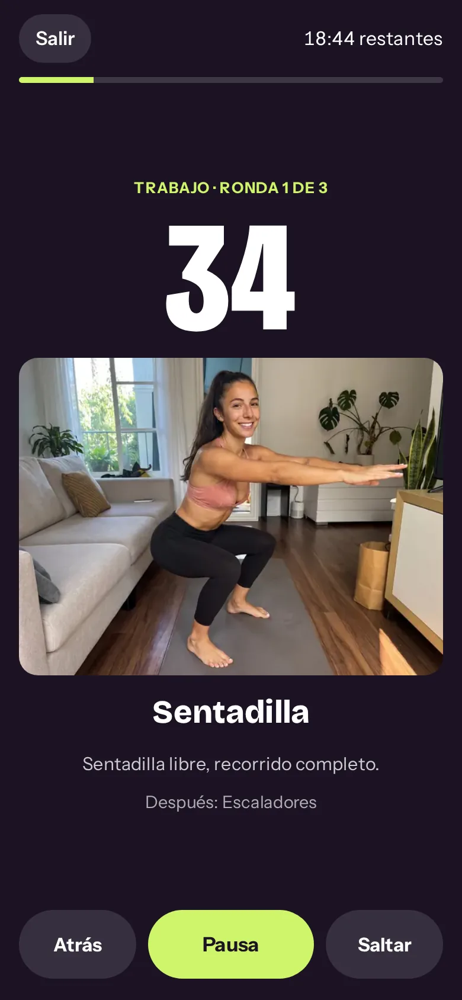
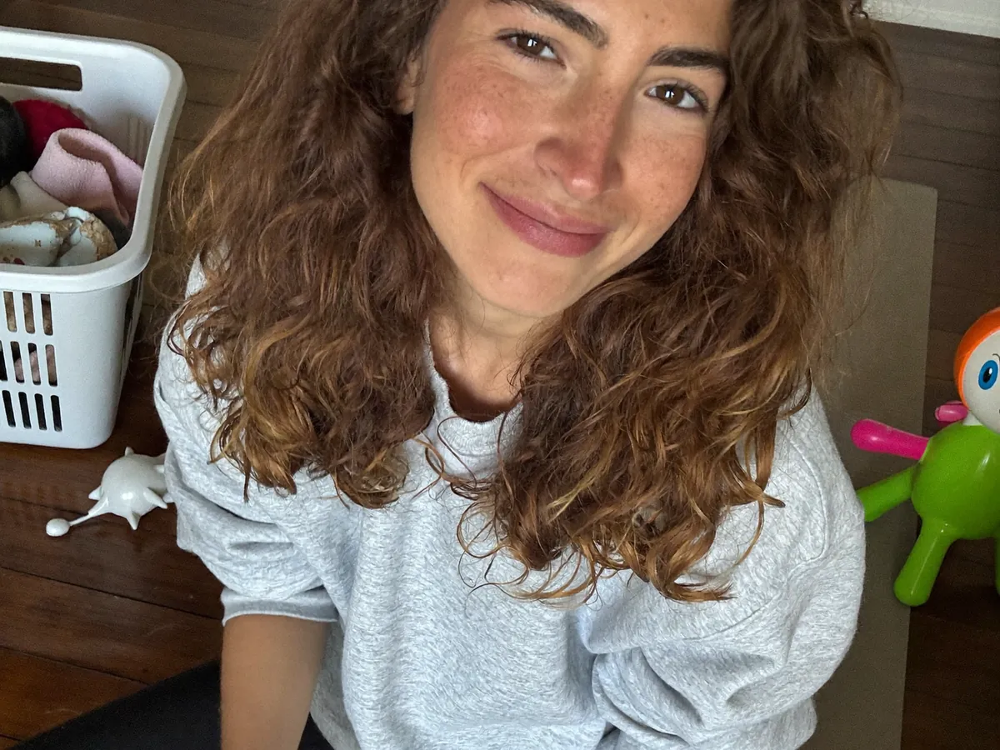
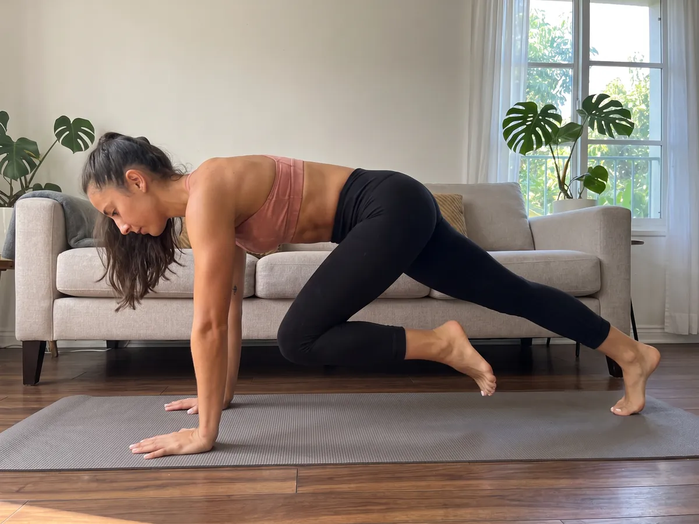
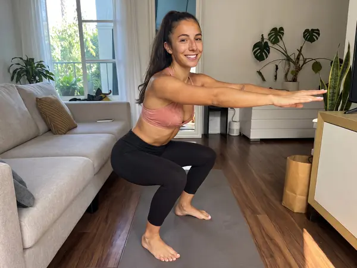
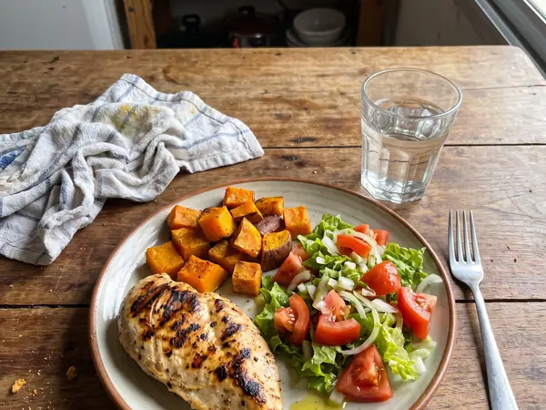

1
Arranque
Aprendés los movimientos y armás la base. 30 segundos de trabajo, 30 de pausa.
Reto de 28 días · desde tu casa
Un plan día por día de 20 a 30 minutos, con un Plan B de 8 minutos para los días que no dan.
¿Querés saber si el Reto Cintura 28 es para vos?

No te falta fuerza de voluntad. Te faltaba un plan que entre en tu vida.

Una hora de gimnasio, dietas de hambre, todo o nada: planes pensados para una vida que no tenés. Este reto va al revés: primero que puedas cumplirlo, después que exija más.
Ver qué incluye y el precioTodo lo que tenés que hacer cada día, en el celular. Y además la guía completa y hojas para imprimir.
La guía está en formato historia: se lee en el celular como un posteo, una página por día. Estas son páginas reales del reto.


Cuatro entrenos de 20 a 30 minutos por semana, una caminata, un día libre y uno de descanso. Cada semana sube un poco. Después, las Semanas 5, 6 y 7 te enseñan a sostenerlo sola y a seguir mejorando.
Aprendés los movimientos y armás la base. 30 segundos de trabajo, 30 de pausa.

Mismos ejercicios, más trabajo. Notás que ya te cuestan menos.

La semana en la que muchas abandonan. Por eso viene preparada distinta.

El volumen más alto del reto, el test final y la vuelta de honor.

Medición final, tu plan y tu propia rutina con timer. Después la repetís y subís de nivel cuando quieras, las veces que quieras.
Quiz para elegir tu nivel, medición de cintura, test de 3 minutos y tu regla para los días difíciles.
Medís, comparás con tu Día 0, armás tu rutina y seguís con las semanas de regalo para mantener lo logrado y seguir mejorando.
Ejemplo real del Día 12: un entreno y un cambio simple en la comida, en menos de media hora.

Sin dietas raras ni prohibidos. Tocá cada plato para ver cómo cambia en el reto.
Mismo antojo, mucho menos aceite y el doble de verdura.
No hace falta dejarlos: cambiá la salsa, medí con la mano y sumá verdura.
Con proteína a la mañana llegás al almuerzo con menos hambre.
La merienda planificada es la que te salva de la picada de la tarde.



Pago único. Acceso inmediato. Incluye la app, la guía y las hojas para imprimir.
Quiero empezar hoyBonus incluidos, sin costo
Garantía de 7 días. Si en la primera semana sentís que no es para vos, pedís el reembolso y te devolvemos el 100%. Sin preguntas.
Apenas se confirma el pago te llega un email con el link a la app y a la guía. Lo abrís desde el celular, sin instalar nada.
El reto son 28 días. Antes tenés un Día 0 para prepararte y después tres semanas de regalo (5, 6 y 7) para sostenerlo y seguir mejorando.
No. Una colchoneta o una toalla, una silla, una pared y una mochila con libros.
Sí. Empezás en nivel Inicial y cada ejercicio tiene una variante más fácil. El plan arranca suave a propósito.
Depende de tu punto de partida y de tu constancia, así que no prometemos un número. Te damos un plan que funciona si lo hacés y una forma honesta de medir tu progreso: cintura, ropa, fuerza y energía.
No. Usás el método del plato y recetas comunes. Nada prohibido y sin pasar hambre.
Sí. La fuerza es justamente lo que más ayuda en esta etapa. Si tenés alguna condición médica, consultá antes de empezar.
No. Todos los ejercicios con salto tienen una variante sin impacto.
Sí. La app se abre en cualquier navegador y la guía se lee en el celular o en la compu. Además tenés hojas A4 para imprimir el calendario y tus medidas.
Tenés 7 días de garantía. Si sentís que no es para vos, pedís el reembolso y te devolvemos el 100%.

28 días, 25 minutos al día, desde tu casa y con un plan para los días que no dan.